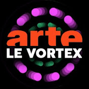

|
|
Science de comptoir |
Géologie |
- Elle lèche des cailloux
- Elle porte le bob Cochonou comme personne
- Elle peut faire un cours sur la Géologie en citant bonne nuit les tipeu
- Elle a inventé le Mimicroscope (en fait c'est une loupe binoculaire)
|
|
|
|
Boneless Archeologie |
Histoire |
- Elle t'explique comment cacher le corps de ton boss
- Elle adore les sujets tout choupinous
- Elle t'apprendra plein de trucs sur les hommes préhistoriques et sur la mort
- C'est tata Jen ! (et elle chante trop bien)
|
|
|
| The Sciencoder |
Expérimentations |
- Il a déjà réparé une barque avec du scotch pour prendre la Méditerrannée, seul
- Il a plein de jouets super sympa mais un peu encombrants
- Il adore C'est pas sorcier et Mythbusters
|
|
|
|
Fouloscopie |
Fouloscopie |
- Ton problème dans la vie n'est pas ta stupidité, c'est que tu es seul
- Grâce à lui tu survivras à un mouvement de foule
- Il a assez la classe pour avoir lancé son propre domaine d'étude dès sa thèse
- Il prouve que l'info ça ne sert pas qu'aux informaticiens
|
|
|
|
Slexno |
Effets spéciaux |
- Il a une moustache incroyable
- Il a déjà été dans le futur à bord du Nexus VI
- Tu pourras désormais faire des magnifiques photos de soda à l'aide d'une perceuse
- Il fait du rap
|
|
|
|
12Parsecs |
Astronomie |
- Son humour rivalise avec celui de Guillaume
- C'est le roi du meilleur des pires références ciné
- Vous pourrez apprendre deux trois trucs sur l'espace (ou le basket)
|
|
|
|
Cédrik JURASSIK |
Paléontologie |
- Il a un lapin tout mignon (et il s'appelle Gérard)
- Il aime les dinosaures et les bestioles bizarres
- Il a une passion pour Ark et Jurassik Park
|
|
|
 |
Le Vortex - ARTE |
Pluridisciplinaire |
- A permis de découvrir que le JDG serait le pire colloc...
- ... Et que, non, les roux ne puent pas (scandale)
- Grâce à eux on sait qu'il ne faut pas cacher un corps dans le congelo quand il y a un chien à la maison
- Permet les collabs les plus incroyables
|
|
|
|
Micode |
Informatique |
- Il n'a pas peur de prendre des risques, que ça soit la prison ou pire
- Il réussit presque à faire croire que l'info c'est intéressant (brrr)
- Jordan aime bien le citer
|
|
|
|
Scilabus |
Physique |
- Elle répondra sérieusement aux questions les plus bêtes que tu pourras te poser
- Elle a résolu le mystère des ouvertures
faciles
- C'est la reine des schémas
|
|